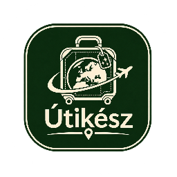
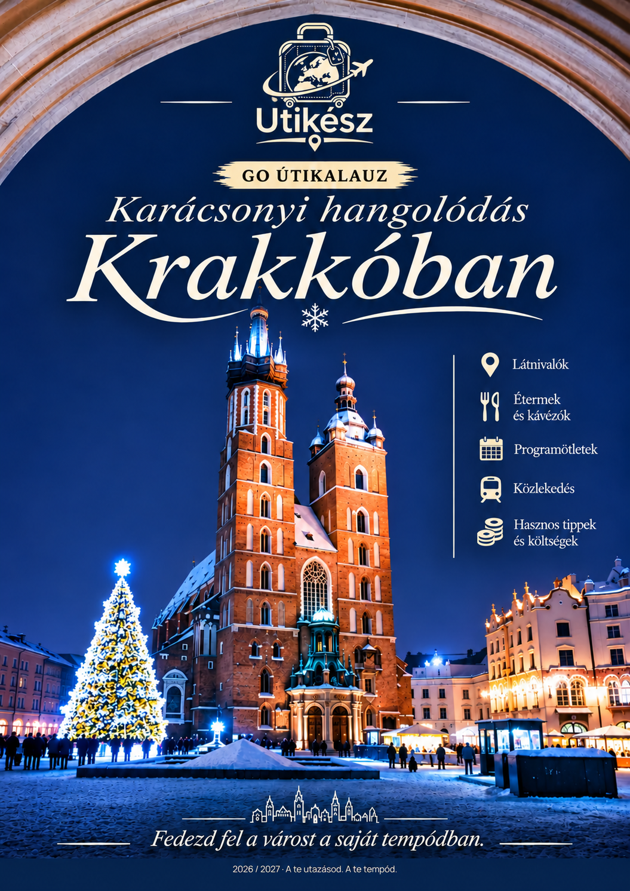
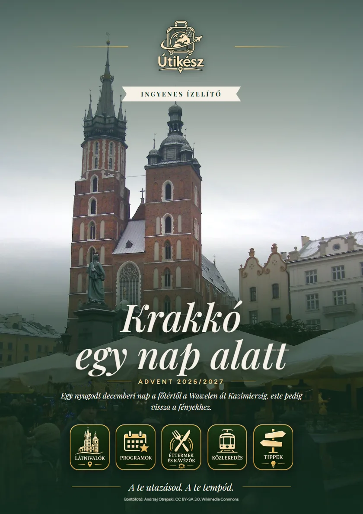

01 /
GO
Kész városkalauzok
Összegyűjtött látnivalók, programok és praktikus tudnivalók. Abból válogatsz, ami érdekel, a saját tempódban.
3 990 Ft-tólKalauzonként eltérő: Krakkó 3 990, Athén 5 490, Málta 7 990 Ft.Kalauzt választok

ÚtikészVÁROSI ÚTINAPLÓ
Városkalauzok és személyre szabott útitervek, hogy könnyebb legyen elindulni.
Most: Krakkó karácsonykor. Kész magyar kalauz ünnepi programokkal, helyekkel és térképpel. Kezdd az ingyenes egynapos útvonallal.
Összegyűjtött látnivalók, programok és praktikus tudnivalók. Abból válogatsz, ami érdekel, a saját tempódban.
Elmondod, hová mennél, mi érdekel és mennyi időd van. Ezekből állítok össze a te utazásodhoz illő, napokra rendezett tervet.
Tervezéssel és ajánlásokkal segítek. A szállást, a jegyeket és a programokat te foglalod le.
ÚTIKÉSZ GO · VÁROSKALAUZ
Ünnepi hangulat, programötletek, látnivalók és praktikus tudnivalók a téli Krakkóhoz.
24 oldal · 2026 / 2027
9 látnivaló, 7 programötlet és 10 gasztromegálló. Közlekedés, érkezés, szálláskörnyékek, két térkép és hasznos linkek.
Megnézem és belelapozok
Papíron a linkek és az interaktív funkciók nem használhatók.

INGYENES ÍZELÍTŐ
Egy nyugodt decemberi nap a főtértől a Wawelen át Kazimierzig. 4 oldalas PDF időtartamokkal, belépőkkel és egy B tervvel hideg időre. Add meg az e-mail-címed, és elküldöm.
Kérem az ingyenes útvonalatAZ ÚTIKÉSZ APP
A kapott, hitelesített PDF-et betöltöd az appba, és a benne lévő helyek, címek, linkek bekerülnek az utazásodhoz. Melléjük saját terveket és pakolólistát is írhatsz.
Megnyitom az appot ↗Bemutató a valódi alkalmazás képernyőiből, szemléltető utazással. Az elmentett adatok és a PDF offline is elérhetők; a külső linkekhez és az online térképekhez internet kell.
ÍGY HASZNÁLHATOD
Elsősorban az Útikész apphoz tervezem a PDF-eket. Ott az utazási adatok, a helyek és az app funkciói együtt használhatók. Hagyományos PDF-olvasóban is megnyithatod őket.
Ha papíron szereted: nyomtasd ki. A szöveg, a képek és a nyomtatott térképek így is veled lehetnek. A linkek, az online térképhivatkozások és az interaktív funkciók papíron nem működnek.
AZ ÚTIKÉSZ MÖGÖTT
Sokáig csak nézegettem a helyeket, ahová egyszer majd jó lenne eljutni. Aztán lassan elkezdtem utazni, és közben rájöttem, hogy a készülődést is szeretem.
Utánanézni a városnak, összegyűjteni a helyeket, kitalálni, hogyan férnek bele kényelmesen a napokba. Ebből nőtt ki az Útikész ötlete.
Azoknak szeretnék segíteni, akik szívesen elindulnának, de az utánajárást nagy feladatnak érzik. Akár az első önálló utazásukra készülnek, akár csak jól jönne egy összeszedett terv.
Útikész. Útra kész.
MÉG PÁR RÉSZLET
Nem. A PDF-et hagyományos PDF-olvasóban is megnyithatod, és ki is nyomtathatod. Az appban a beolvasott helyeket a saját utazásodhoz rendezheted, saját adatokat és pakolólistát adhatsz hozzájuk.
Az előre elmentett PDF és az eszközödön tárolt appadatok internet nélkül is elérhetők. A külső weboldalak és az online térképek megnyitásához internetkapcsolat szükséges.
A termékoldalon a „Kérem a kalauzt” gombbal egy rövid rendelési űrlapot töltesz ki. 24 órán belül visszaküldöm a fizetési adatokat, és az átutalás beérkezése után 48 órán belül e-mailben, PDF-ben megkapod a kalauzt. A weboldalon nincs online fizetés. A rendelés menetét és az elállási jogot az ÁSZF írja le.
Igen. A rendelési űrlap megjegyzés rovatába írd be a címzett nevét és e-mail-címét, és a kalauzt az ő címére küldöm. A számla a te nevedre szól.
A kérdőívben megadott utazás alapján. A 14 990 Ft az induló ár; a végösszeg az utazás hosszától, az úti céloktól és az egyéni igényeidtől függ. Pontos ajánlatot kapsz, mielőtt döntesz.
HA KÉRDEZNÉL